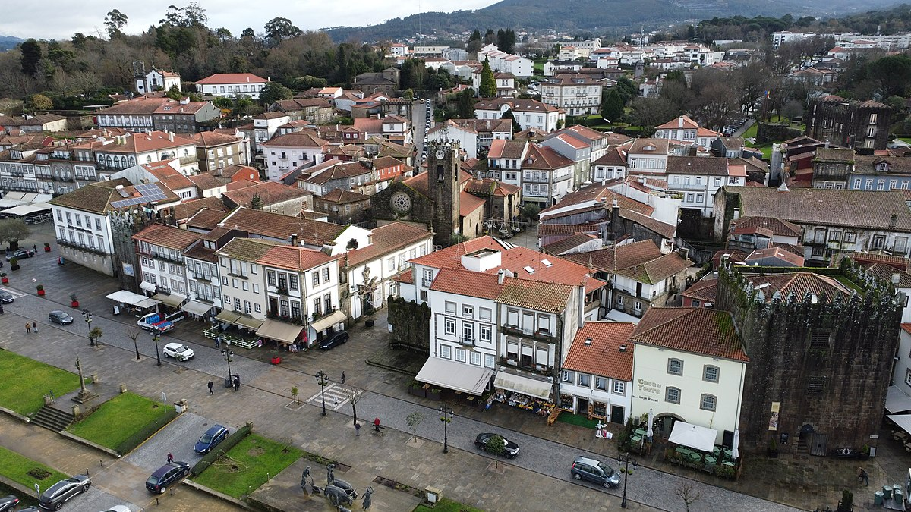
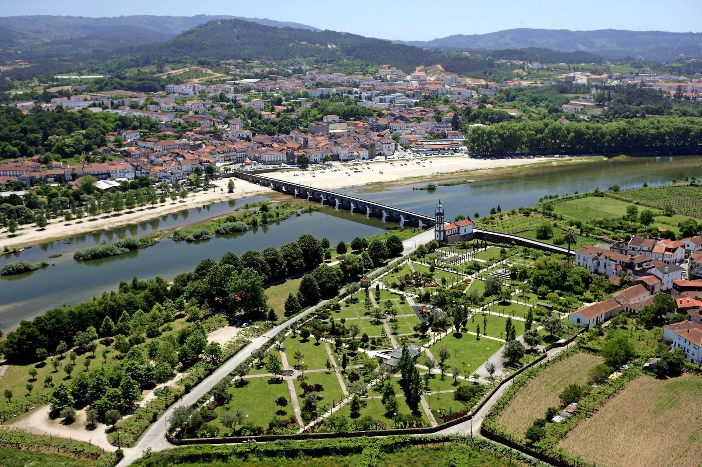
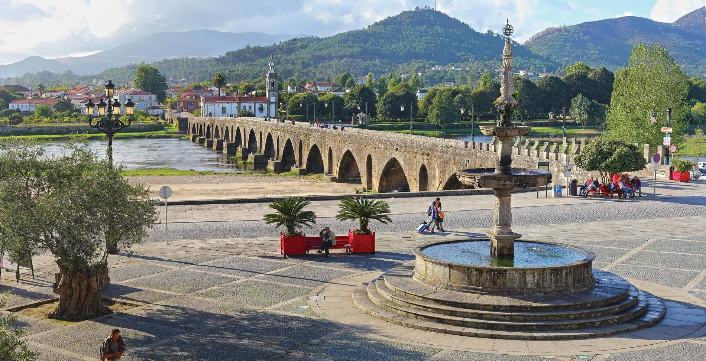

Vila de Ponte de Lima
História da Vila
Em pleno coração do Vale do Lima, a beleza castiça e peculiar da
vila mais antiga de Portugal esconde raízes profundas e lendas
ancestrais. Foi a Rainha D. Teresa quem, na longínqua data de 4 de
março de 1125, outorgou carta de foral à vila, referindo-se à
mesma como Terra de Ponte. Anos mais tarde, já no século XIV, D.
Pedro I, atendendo à posição geoestratégica de Ponte de Lima,
mandou muralhá-la, pelo que o resultado final foi o de um burgo
medieval cercado de muralhas e nove torres, das quais ainda restam
duas, vários vestígios das restantes e de toda a estrutura
defensiva de então, fazendo-se o acesso à vila através de seis
portas.
A ponte, que deu nome a esta nobre terra, adquiriu sempre uma
importância de grande significado em todo o Alto Minho, atendendo
a ser a única passagem segura do Rio Lima, em toda a sua extensão,
até aos finais da Idade Média.
Rotas Turisticas


